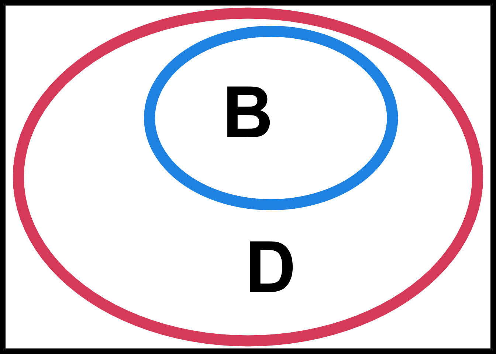
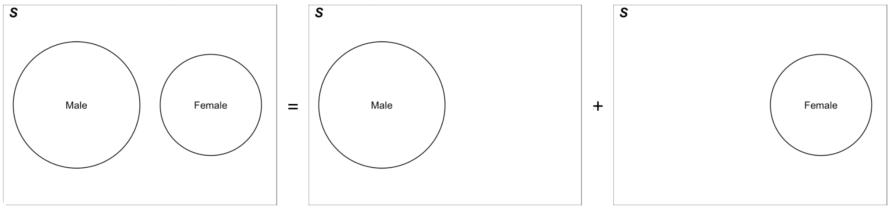
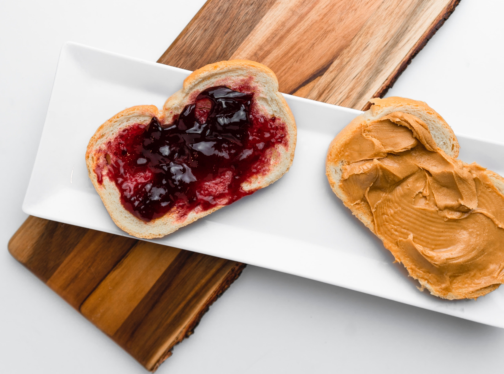

7 Probability Rules
In this chapter, we formally define some terms used in probability, and learn some basic probability operations.
7.1 Probability Operations and Rules
Experiments, Events and Sample Space
Probability starts with the concept of sets. When we calculate the probability of “something”, that something is represented as a set, which is a collection of some outcomes generated by an process or experiment associated to the something we are interested. To denote a set, we usually use a pair of curly braces { }, and the elements of the set is put inside the braces, each separated by a comma, for example, {red, green, yellow} is a set with three color elements.
Here we define some terminology that are commonly used in set and probability concepts.
- An experiment is any process in which the possible outcomes can be identified ahead of time.
The key words is ahead of time. For example, we know what is the result of flipping a coin, which is heads or tails showing up, before we actually do it. Therefore, flipping a coin is an experiment. Similarly, before we roll a six-sided die, we already know the possible outcome of doing that, which is 1, 2, 3, 4, 5, 6, so rolling a die is also an experiment.
- An event is a set of possible outcomes of the experiment.
Generally there are two or more potential outcomes for some experiment. Any collection of those outcomes is called an event. For example, there are 6 possible outcomes for rolling a die, 1, 2, 3, 4, 5, 6. Then any collection of those 6 numbers is an event. So “An odd number showing up” which corresponds to the collection {1, 3, 5} is an event. “An even number showing up” that is represented by {2, 4, 6} is also an event.
- The sample space \((\mathcal{S})\) of an experiment is the collection of ALL possible outcomes of the experiment.
Based on the definition, the sample space the largest set associated with an experiment because it collects all possible outcomes. In other words, when an experiment is conducted, no matter what outcome shows up, it is always in the sample space.
The table below provides a summary of experiments flipping a coin and rolling a die.
| Experiment | Possible Outcomes | Some Events | Sample Space |
|---|---|---|---|
| Flip a coin ü™ô | Heads, Tails | {Heads}, {Heads, Tails}, ‚Ķ | {Heads, Tails} |
| Roll a die üé≤ | 1, 2, 3, 4, 5, 6 | {1, 3, 5}, {2, 4, 6}, {2}, {3, 4, 5, 6}, ‚Ķ | {1, 2, 3, 4, 5, 6} |
Set Concept: Example of Rolling a six-side balanced die
Tip
Draw a Venn Diagram every time you get stuck! Venn diagram is a very useful tool for identifying a set, so I encourage you to draw a venn diagram when you get stuck on complicated set operations.
- The complement of an event (set) \(A\), is denoted \(A^c\) . It is the set of all outcomes (elements) of \(\mathcal{S}\) in which \(A\) does not occur. For the die example, let \(A\) be an event that a number greater than 2 is rolled. Then \(A = \{3, 4, 5, 6\}\) and \(A^c = \{1, 2\}\).
- The union \((A \cup B)\) is the set of all outcomes of \(\mathcal{S}\) in \(A\) or \(B\). For the die example, let \(B\) be an event that an even number is rolled. Then \(B = \{2, 4, 6\}\) and \(A \cup B = \{2, 3, 4, 5, 6\}\). Basically, as long as an element is in either \(A\) or \(B\), not necessarily in both \(A\) and \(B\), the element is collected in the set \((A \cup B)\).

- The intersection \((A \cap B)\) is the set of all outcomes of \(\mathcal{S}\) in both \(A\) and \(B\). For the die example, \(A \cap B = \{4, 6\}\). Basically, for any element in the set \((A \cap B)\), it must be an element of \(A\) and of \(B\).

- \(A\) and \(B\) are disjoint or mutually exclusive if they have no outcomes in common \((A \cap B = \emptyset)\). \(\emptyset\) means an empty set, \(\{\}\), i.e., no elements in the set. If the two events are disjoint, it means that they cannot occur at the same time for one single trial of the experiment. For the die example, let \(C\) be an event that an odd number is obtained. Then \(C = \{1, 3, 5\}\) and \(B \cap C = \emptyset\). When we roll a die one time, we cannot get a number that is odd and even at the same time.
- The containment \((A \subset B)\) means every elements of \(A\) also belongs to \(B\). In other words, if \(A\) occurs, then so does \(B\). For the die example, let \(B\) be the event that an even number is obtained and \(D\) be the event that a number greater than 1 is obtained. Then \(B = \{2, 4, 6\}\) and \(D = \{2, 3, 4, 5, 6\}\). In this case, every even number is greater than one, therefore \(B\) is a subset of \(D\), i.e., \(B \subset D\).

Note
Keep in mind that every event (set) being considered is a subset of the sample space \((\mathcal{S})\) because it only makes sense to discuss the events that are possibly to be occurred. As a result, for any event \(A\), \(A \subset \mathcal{S}\).
Probability Rules
We have learned how to represent an event in terms of sets and set operations. Here we are going to learn several probability rules for events.
First, we denote the probability of an event \(A\) on a sample space \(\mathcal{S}\) as \(P(A)\).
Tip
Treat the probability of an event as the area of the event in the Venn diagram.
In order to have a coherent and logically consistent set of probability rules, we need some axioms that are self-evident to anyone. The three axioms are as follows.
- \(P(\mathcal{S}) = 1\)
- For any event \(A\), \(P(A) \ge 0\)
- If \(A\) and \(B\) are disjoint or mutually exclusive, \(P(A \cup B) = P(A) + P(B)\)
If we treat the sample space as an event, the probability of the entire sample space is always equal to one because this event must happen every time the experiment is conducted. In the Venn diagram, the sample space is the entire rectangle, and in probability, we presume the area of the rectangle is one.
Because any event is a collection of some outcomes that could possibly occur or not occur, its probability is greater than or equal to zero. Any probability cannot be negative. It is clearly shown in terms of Venn diagram because an area of any shape of an object is greater than or equal to zero.
Finally, if the two events are disjoint, the probability of the union of the two is just the sum of their own probability. For example, if the probability of getting a green M&M is 20% and that of getting a blue M&M is 15%, then the probability of getting a green or blue M&M is 20% + 15% = 35%. It is clearly shown in the Venn diagram too because the total area of the two disjoint events in the sample space is the sum of the individual area.
With the three axioms, the entire probability operation system can be constructed. Some basic properties are listed here.
- \(P(\emptyset) = 0\).
- \(0 \le P(A) \le 1\)
-
Addition Rule: \(P(A \cup B) = P(A) + P(B) - P(A \cap B)\)
- \(P(A^c) = 1 - P(A)\)
- If \(A \subset B\), then \(P(A) \le P(B)\)
The empty set does not contain any possible outcomes of an experiment. Because some outcome must be occurred after an experiment is conducted, it is impossible for some event to happen without any outcome involved. Therefore, the probability of the empty set is zero. In terms of Venn diagram, an empty set is a set with area zero because it does not occupy any part (outcome) of the entire sample space.
Since every event being considered must be a subset of the sample space, the area of any event is smaller than the area of the sample space which is one. Therefore, for any event \(A\), \(P(A) \le 1\). \(P(A) = 1\) if and only if \(A = \mathcal{S}\).
The addition rule can be clearly understood using the Venn diagram. Figure 7.1 shows how \(P(A \cup B)\) is expressed by \(P(A)\), \(P(B)\) and \(P(A \cap B)\). To get the area of \(A \cup B\), we can first consider the sum of the area of \(A\) and \(B\), the left and right circles. However, the middle part which is \(A \cap B\) is counted twice when we take the sum, so the one piece of area of \(A \cap B\) should be removed from the sum of the area.

In fact, the third axiom is a special case of the addition rule. Figure 7.2 illustrates the case. Since the two events are disjoint, \(A \cap B = \emptyset\), and the area of \(A \cap B\), or \(P(A \cap B)\) is zero.

Since \(A \cup A^c = \mathcal{S}\) and \(A \cap A^c = \emptyset\), we have \[P(A \cup A^c) = P(\mathcal{S}) = P(A) + P(A^c)\] Therefore, \(P(A) + P(A^c) = 1\) and \(P(A^c) = 1 - P(A)\).
If \(A \subset B\), the area of \(A\) is smaller or equal to the area of \(B\). Therefore, \(P(A) \le P(B)\).
Example: M&M Colors
- The makers of the M&Ms report that their plain M&Ms are composed of
- 15% Yellow, 10% Red, 20% Orange, 25% Blue, 15% Green and 15% Brown

-
Solution
\(P(\mathrm{Brown}) = 0.15\)
\(\begin{align} P(\mathrm{Red} \cup \mathrm{Green}) &= P(\mathrm{Red}) + P(\mathrm{Green}) - P(\mathrm{Red} \cap \mathrm{Green}) \\ &= 0.10 + 0.15 - 0 = 0.25 \end{align}\)
\(P(\text{Not Blue}) = 1 - P(\text{Blue}) = 1 - 0.25 = 0.75\)
\(P(\text{Red and Brown}) = P(\emptyset) = 0\)
7.2 Conditional Probability and Independence
Conditional Probability
Quite often people are interested in the probability of something happening given the fact that some other event has been occurred or some information about the experiment or its outcomes have been known. In this case, we can calculate the conditional probability that takes the occurred event or known information into account. The conditional probability would be more appropriate for quantifying uncertainty about what we are interested because knowing some event being occurred is a piece of valuable information that helps us properly adjust the chance of something happening.
By definition, the conditional probability of \(A\) given \(B\) is \[ P(A \mid B) = \frac{P(A \cap B)}{P(B)}.\]
The vertical bar “\(\mid\)” is read as given or conditional on. Therefore, we consider the event \(A\) not in the entire sample space, but the event \(A\) that is conditional on the event \(B\), or \(A \mid B\). In other words, we don’t consider all possible parts of \(A\). Instead, we only care about the part of \(A\) for which \(B\) has already occurred.
The formula is well defined when \(P(B) > 0\) and undefined if \(P(B) = 0\). Intuitively, one cannot calculate the probability of \(A\) given \(B\) when \(B\) is not occurred by any chance. Figure 7.3 illustrates the conditional probability of \(A\) given \(B\) using the Venn diagram. When we compute the probability of \(A\), the information about \(B\) have been given, and the probability of \(A\) is adjusted, according to this information. The conditional probability is the ratio of \(P(A \cap B)\) to \(P(B)\).

So what is the difference between \(P(A)\) and \(P(A \mid B)\)? How knowing event \(B\) occurred affects the probability of \(A\)? Well, Figure 7.4 describes the difference. When we calculate \(P(A)\), we assume we don’t have any specific information at hand. What we can base on is the entire sample space because we need to take all possible outcomes into account, and see if any outcome is related to the event \(A\). Therefore, although we just write \(P(A)\), the probability is actually calculated conditional on the entire sample space, i.e., \(P(A \mid \mathcal{S})\), which is the ratio of area of \(A\) to the area of \(\mathcal{S}\) that is one. Such probability is usually called unconditional or marginal probability because being conditional on \(\mathcal{S}\) is like being not conditional on some specific event, and “marginal” means all other possible events or outcomes have been “marginalized” out, and only event \(A\) is of our interest.
Now if we know \(B\) has occurred, we don’t need to consider the entire sample space any more. Instead, we can focus only on \(B\) since we know \(B\) has occurred, and anything not related to \(B\), or \(B^c\) becomes irrelevant. We shrink the search pool from \(\mathcal{S}\) to the smaller space \(B\). To find \(P(A \mid B)\), we just need to find how large part of \(B\) that also belongs to \(A\). Intuitively speaking, the event \(B\) has become our new sample space that are smaller than the original \(\mathcal{S}\). We calculate the probability of \(A\) based on \(B\), not \(\mathcal{S}\). Since \(B\) is the new sample space, we can treat \(P(B)\) as one. In other words, any probability conditional on \(B\) is scaled up by \(1 / P(B)\) so that \(P(B) \times \frac{1}{P(B)} = 1\). This is why \(P(A \cap B)\) is multiplied by \(1 / P(B)\) in the conditional probability formula.
Here is an example of new sample space or search pool. Suppose we would like to calculate the probability of a woman who is greater than 20 years old in a certain area. When we don’t have any background information about the woman, to compute the probability, we need to base on the entire female population of interest. But if we do know that the woman has two children, we shrink our focus on the pool of women who have two children, and compute the proportion of the women pool that is over 20 years of age.
The conditional probability formula lead to the multiplication rule: \[P(A \cap B) = P(A \mid B)P(B) = P(B \mid A)P(A)\] The rule is a rearranged form of the formula by multiplying both sides by \(P(B)\). Notice that \(P(B \mid A) = \frac{P(B \cap A)}{P(A)}\) and hence \(P(B \mid A)P(A) = P(B \cap A) = P(A \cap B)\).
Example: Peanut Butter and Jelly
- Suppose 80% of people like peanut butter, 89% like jelly and 78% like both. Given that a randomly sampled person likes peanut butter, what is the probability that she also likes jelly?

- We want \(P(J\mid PB) = \frac{P(PB \cap J)}{P(PB)}\).
- From the problem we have \(P(PB) = 0.8\), \(P(J) = 0.89\) and \(P(PB \cap J) = 0.78\)
- \(P(J\mid PB) = \frac{P(PB \cap J)}{P(PB)} = \frac{0.78}{0.8} = 0.975\)
- If we don’t know if the person loves peanut butter, the probability that he or she loves jelly is 89%.
- If we do know she loves peanut butter, the probability that he or she loves jelly is going up to 97.5%.
Independence
In the previous example, we learn that whether a person loves peanut butter affects the probability that she loves jelly. This piece of information is relevant, and the two events “love peanut butter” and “love jelly” are dependent each other because the one event will affect the chance of the other event happening. Uncovering the association or dependence is important for statistical inference because it helps statisticians better pin down the probability of being interest.
Formally speaking, event \(A\) and \(B\) are independent if \(\begin{align} P(A \mid B) &= P(A) \text{ or }\\ P(B \mid A) &= P(B) \text{ or } \\P(A\cap B) &= P(A)P(B)\end{align}\) \(\text{ for } P(A) > 0 \text{ and } P(B) > 0.\)
Intuitively, this means that knowing \(B\) occurs does not change the probability that \(A\) occurs and vice versa. The information about \(B\) is irrelevant to probability of \(A\).
Here is a question. Can we compute \(P(A \cap B)\) if we only know \(P(A)\) and \(P(B)\) with no information other than sample space? The answer is no. We cannot compute \(P(A \cap B)\) because we don’t know if \(A\) and \(B\) are independent. We can only do so if \(A\) and \(B\) are independent. In general, we need to consider the dependence of two events and use the multiplication rule \(P(A \cap B) = P(A \mid B)P(B)\).
Figure 7.5 explain independence using the Venn diagram. Independence means that the ratio of area of \(A\) to area of \(\mathcal{S}\) is the same as the ratio of area of \(A \cap B\) to area of \(B\). Look at the case of non-independence on the right, the two events (circles) in particular. The area of \(A \cap B\) is very close to the area of \(B\) because the two events are quite overlapped each other. It means that the ratio of area of \(A \cap B\) to area of \(B\) is pretty close to one. So if we know \(B\) has occurred, there will be a very high chance that \(A\) would happen as well. In this case, the information about \(B\) does matter, and affect probability of \(A\). The idea is that the two events describe pretty much similar set of outcomes for an experiment. As a result, when one occurs, we are pretty sure the other happens as well.
Independence Example
Solution
- \(P(A \cap B) = P(A)P(B)=0.21\)
- \(P(A \cup B) = P(A)+P(B)-P(A\cap B) = 0.3+0.7-0.21=0.79\)
- \(P(A \mid B) = P(A) = 0.3\)
7.3 Bayes’ Formula
Bayes’ formula is one of the most important theorems in the probability and statistical theory. It is the basis of Bayesian inference and Bayesian machine learning discussed in Chapter 20, which is getting more and more popular these days due to fast computation technology. In this section, we learn why we need the Bayes’s formula, and how we can use it to obtain the probability we are interested.
Why Bayes’ Formula?
Quite often, we know \(P(B \mid A)\), but we are much more interested in \(P(A \mid B)\). Let’s take COVID diagnostic test as an example. Suppose you are having a sore throat and muscle and headache, and you decide to test if you got COVID. Of course, any test may not be 100% accurate. A person who does get COVID may be tested negative, which is called false negative, and a person who doesn’t get COVID may get a positive testing result, false positive in this case. With lots of trials, we can have false negative rate \(P(\text{test negative} \mid \text{COVID})\) and false positive rate \(P(\text{test positive} \mid \text{not COVID})\) of some COVID test.
Let me ask you a question. Suppose that during a doctor’s visit, you tested positive for COVID. If you only get to ask the doctor one question, which would it be?
- What’s the chance that I actually have COVID?
- If in fact I don’t have COVID, what’s the chance that I would’ve gotten this positive test result?
If I were you, I would choose a. because I care more about whether I got COVID or not, not the efficacy of the test! In fact, diagnostic tests provide \(P(\text{test positive} \mid \text{COVID})\) and \(P(\text{test positive} \mid \text{not COVID})\), but what we are really interested is \(P(\text{COVID} \mid \text{test positive})\)!
So, how can we utilize the diagnostic test efficacy to get the chance that one actually gets COVID? Bayes’ formula is the answer. It provides a way to find \(P(A \mid B)\) from \(P(B \mid A)\).

Formula
The Bayes’ formula comes from the conditional probability. If \(A\) and \(B\) are events whose probability is not zero or one, then the Bayes’ formula is derived as below. \[\begin{align*} P(A \mid B) &= \frac{P(A \cap B)}{P(B)} \quad ( \text{def. of cond. prob.}) \\ &= \frac{P(A \cap B)}{P((B \cap A) \cup (B \cap A^c))} \quad ( \text{partition } B) \\ &= \frac{P(B \mid A)P(A)}{P(B \mid A)P(A) + P(B \mid A^c)P(A^c)} \quad ( \text{multiplication rule}) \end{align*}\]
The first equality is just the definition of conditional probability. For the second equality, we partition \(B\) into \((B \cap A)\) and \((B \cap A^c)\) as \((B \cap A) \cup (B \cap A^c) = B\) and \((B \cap A)\) and \((B \cap A^c)\) are disjoint, as illustrated in Figure 7.6. 1 Since \((B \cap A)\) and \((B \cap A^c)\) are disjoint, \(P((B \cap A) \cup (B \cap A^c)) = P(B \cap A) + P(B \cap A^c)\). Finally, we can use the multiplication rule to write \(P(B \cap A)\) as \(P(B \mid A)P(A)\) and \(P(B \cap A^c)\) as \(P(B \mid A^c)P(A^c)\). The derivation of the Bayes’ formula is complete.
Notice that we use the information about \(P(B \mid A)\), \(P(B \mid A^c)\), \(P(A)\) and \(P(A^c)\) to obtain \(P(A \mid B)\). In general, \(P(A \mid B) \ne P(A \mid B)\), and they are completely different probabilities. Interpret your probability with additional care.
[Extended formula]
Example: Passing Rate
After taking MATH 4720, \(80\%\) of students understand the Bayes’ formula.
Of those who understood the Bayes’ formula, \(95\%\) passed.
Of those who did not understand the Bayes’ formula, only \(60\%\) passed.

-
Step 1: Formulate what we would like to compute
- \(P(\text{understood} \mid \text{passed})\)
-
Step 2: Define relevant events in the formula: \(A\), \(A^c\) and \(B\)
- Let \(A =\) understood and \(B =\) passed. Then \(A^c =\) didn’t understand and \(P(\text{understood} \mid \text{passed}) = P(A \mid B)\).
-
Step 3: Find probabilities in the Bayes’ formula using provided information.
- \(P(B \mid A) = P(\text{passed} \mid \text{understood}) = 0.95\)
-
\(P(B \mid A^c) = P(\text{passed} \mid \text{didn't understand}) = 0.6\)
- \(P(A) = P(\text{understood}) = 0.8\)
- \(P(A^c) = 1 - P(A) = 0.2\)
-
Step 4: Apply Bayes’ formula.
- \(\small P(\text{understood} \mid \text{passed}) = P(A \mid B) = \frac{P(B \mid A)P(A)}{P(B \mid A)P(A) + P(B \mid A^c)P(A^c)} = \frac{(0.95)(0.8)}{(0.95)(0.8) + (0.6)(0.2)} = 0.86\)
Tree Diagram Illustration
- \(80\%\) of students understand the Bayes’ formula.
- Of those who understood the Bayes’ formula, \(95\%\) passed (\(5\%\) failed).
- Of those who did not understand the formula, \(60\%\) passed (\(40\%\) failed).
\[\begin{align*} & P(\text{yes} \mid \text{pass}) \\ &= \frac{P(\text{yes and } \text{pass})}{P(\text{pass})} \\ &= \frac{P(\text{yes and } \text{pass})}{P(\text{pass and yes}) + P(\text{pass and no})}\\ &= \frac{P(\text{pass | yes})P(\text{yes})}{P(\text{pass | yes})P(\text{yes}) + P(\text{pass | no})P(\text{no})} \\ &= \frac{0.76}{0.76 + 0.12} = 0.86 \end{align*}\]
7.4 Exercises
- A Pew Research survey asked 2,422 randomly sampled registered voters their political affiliation (Republican, Democrat, or Independent) and whether or not they identify as swing voters. 38% of respondents identified as Independent, 25% identified as swing voters, and 13% identified as both.
- Are being Independent and being a swing voter disjoint, i.e. mutually exclusive?
- What percent of voters are Independent but not swing voters?
- What percent of voters are Independent or swing voters?
- What percent of voters are neither Independent nor swing voters?
- Is the event that someone is a swing voter independent of the event that someone is a political Independent?
| Earth is warming | Not warming | Don’t Know/Refuse | Total | |
|---|---|---|---|---|
| Conservative Republican | 0.11 | 0.20 | 0.02 | 0.33 |
| Mod/Lib Republican | 0.06 | 0.06 | 0.01 | 0.13 |
| Mod/Cons Democrat | 0.25 | 0.07 | 0.02 | 0.34 |
| Liberal Democrat | 0.18 | 0.01 | 0.01 | 0.20 |
| Total | 0.60 | 0.34 | 0.06 | 1.00 |
- A Pew Research poll asked 1,423 Americans, “From what you’ve read and heard, is there solid evidence that the average temperature on earth has been getting warmer over the past few decades, or not?”. The table above shows the distribution of responses by party and ideology, where the counts have been replaced with relative frequencies.
- Are believing that the earth is warming and being a liberal Democrat mutually exclusive?
- What is the probability that a randomly chosen respondent believes the earth is warming or is a Mod/Cons Democrat?
- What is the probability that a randomly chosen respondent believes the earth is warming given that he is a Mod/Cons Democrat?
- What is the probability that a randomly chosen respondent believes the earth is warming given that he is a Mod/Lib Republican?
- Does it appear that whether or not a respondent believes the earth is warming is independent of their party and ideology? Explain your reasoning.
- After an MATH 4740/MSSC 5740 course, 73% of students could successfully construct scatter plots using R. Of those who could construct scatter plots, 84% passed, while only 62% of those students who could not construct scatter plots passed. Calculate the probability that a student is able to construct a scatter plot if it is known that she passed.
We say sets \(A_1, \dots, A_n\) form a partition of set \(A\) if \(A_1 \cup \cdots \cup A_n = A\) and \(A_1, \dots, A_n\) are disjoint.↩︎